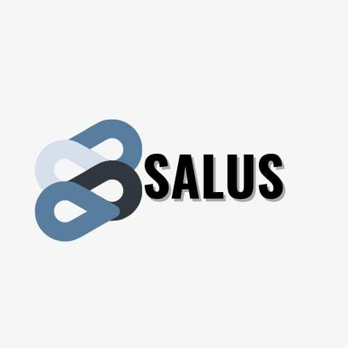

Salus - School Security System

Project Overview
Salus is a school security and notification system built as a collaborative project with a team of 4 developers using Angular CLI (version 11.2.1). The system was designed to enhance campus security through innovative QR code-based authentication and real-time user tracking.
How It Works
- User Registration: Users register on the platform with their details
- QR Code Generation: Upon login, each user receives a unique QR code
- Real-Time Tracking: QR codes are saved to the database for verification
- Verification System: Administrators can view all registered users
- Super User Access: Special roles with management privileges
Key Features
- Secure user authentication with QR codes
- Admin dashboard for monitoring logins
- Super user roles for system administration
- Database storage for all registered users
- Real-time login tracking and verification
Technologies Used
- Framework: Angular CLI v11.2.1
- Language: Python
- QR Code: QR code generation library
My Role
As part of a 4-person development team, I contributed to [your specific role - e.g., frontend development, database integration, QR code generation, etc.]. This project gave me valuable experience in collaborative development, Angular framework, and building real-world security solutions.